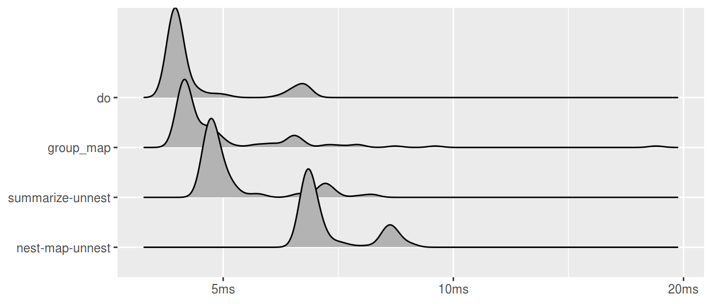
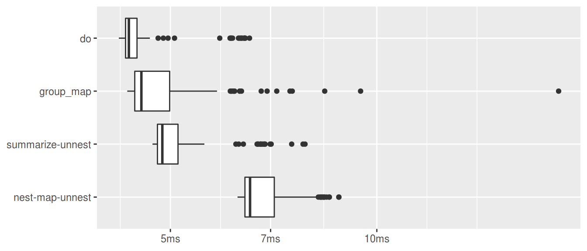
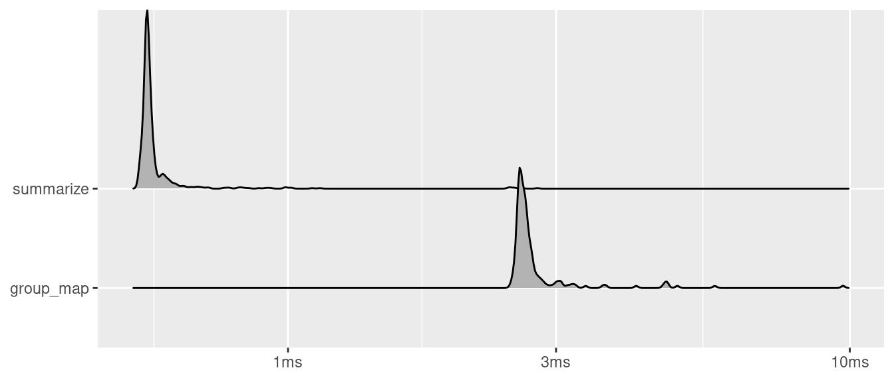

tidyverse において，grouped data frame に対して grouping variables
以外の各列に関数を適用する方法は種々ある．
summarize: 関数の返り値が長さ1の時group_map: 関数の返り値がデータフレームの時nest %>% map: 関数の返り値が複雑な時
基本は上述の使い分けのようだが (help(dplyr::group_map))，
一応， summarize も返り値を list() してやると複雑な処理に対応できる
(後述)．
summarize と nest %>% .... を比べた時に，nest
が新しいオブジェクトを作るせいで遅くなりがちだと知り，
summarize を偏重している1．
しかし，dplyr 0.8.0 で group_map がくるし，do が deprecated になって久しいし，これらもひっくるめてベンチマークし直してみることにした．
パッケージ読み込み
pacman::p_load(
bench, # ベンチマークするためのパッケージ
broom, dplyr, purrr, tidyr, # ベンチマークするコードで使うパッケージ
ggridges, knitr # ベンチマークした結果を可視化するためのパッケージ
)ベンチマーク
mtcars_grouped_by_cyl <- mtcars %>% group_by(cyl) # 共通する操作を予め実行
res <- mark(
"group_map" = mtcars_grouped_by_cyl %>%
group_map(~ tidy(lm(mpg ~ disp, data = .x))),
"nest-map-unnest" = mtcars_grouped_by_cyl %>%
nest() %>%
mutate(data = map(data, ~ tidy(lm(mpg ~ disp, data = .)))) %>%
unnest(),
"summarize-unnest" = mtcars_grouped_by_cyl %>%
summarize(list(tidy(lm(mpg ~ disp)))) %>%
unnest,
"do" = mtcars_grouped_by_cyl %>%
do(tidy(lm(mpg ~ disp, data = .))),
min_time = Inf,
max_iterations = 100L
) コードはユタニさんが group_map を紹介された記事のものを利用しています．
実行結果はこんな感じ
## # A tibble: 6 x 6
## # Groups: cyl [3]
## cyl term estimate std.error statistic p.value
## * <dbl> <chr> <dbl> <dbl> <dbl> <dbl>
## 1 4 (Intercept) 40.9 3.59 11.4 0.00000120
## 2 4 disp -0.135 0.0332 -4.07 0.00278
## 3 6 (Intercept) 19.1 2.91 6.55 0.00124
## 4 6 disp 0.00361 0.0156 0.232 0.826
## 5 8 (Intercept) 22.0 3.35 6.59 0.0000259
## 6 8 disp -0.0196 0.00932 -2.11 0.0568結果
表
# summary(res) を順位で並べ替え+列選択
res_summary <- res %>%
summary() %>%
arrange(mean) %>%
select(expression, min, mean, median, max, n_itr)
# 表に出力 (S3をうまく扱えないっぽいので文字列にしておく)
gt(mutate_all(res_summary,as.character))| expression | min | mean | median | max | n_itr |
|---|---|---|---|---|---|
| do | 4.21ms | 4.41ms | 4.33ms | 6.16ms | 87 |
| group_map | 4.33ms | 4.71ms | 4.5ms | 7.15ms | 86 |
| summarize-unnest | 4.71ms | 4.92ms | 4.85ms | 6.29ms | 84 |
| nest-map-unnest | 6.26ms | 6.57ms | 6.48ms | 8.45ms | 79 |
Ridgeline 図
# res の expression は factor型だが，水準の順序を表と同じにしておく
res$expression <- fct_relevel(res$expression, rev(res_summary$expression))
# Ridgeline 図を出力
plot(res, type = "ridge") + labs(x = NULL, y = NULL)## Picking joint bandwidth of 0.00939
箱ひげ図
plot(res, type = "boxplot") + labs(x = NULL, y = NULL)
感想と補足
実は do() が最速ということにビビらされていますが，
group_map() は高速な上にシンプルに書けるので便利そうですね．
単純なデータの要約の場合は summarize を使う方が簡単に書けますし，動作も高速です．
このあたりは臨機応変に．
iris %>%
group_by(Species) %>%
summarize_all(mean)## # A tibble: 3 x 5
## Species Sepal.Length Sepal.Width Petal.Length Petal.Width
## <fct> <dbl> <dbl> <dbl> <dbl>
## 1 setosa 5.01 3.43 1.46 0.246
## 2 versicolor 5.94 2.77 4.26 1.33
## 3 virginica 6.59 2.97 5.55 2.03plot(
mark(
"group_map" = iris %>%
group_by(Species) %>%
group_map(~ map_dfc(.x, mean)),
"summarize" = iris %>%
group_by(Species) %>%
summarize_all(mean)
),
type = "ridge"
) +
labs(x = NULL, y = NULL)## Picking joint bandwidth of 0.00324
Enjoy!
- ユタニさんとの会話
↩nest()は新しいオブジェクトをつくるのがボトルネックなのかなと。ちなみに余談ですが、dplyrの中で使ってるmean()はたぶんbase::mean()じゃないのでちょっと速いという話もあります。
— Hiroaki Yutani (@yutannihilation) December 7, 2018